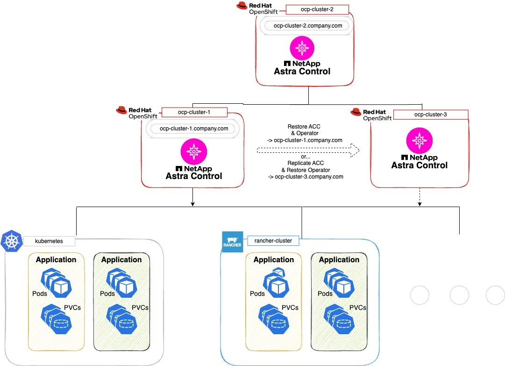
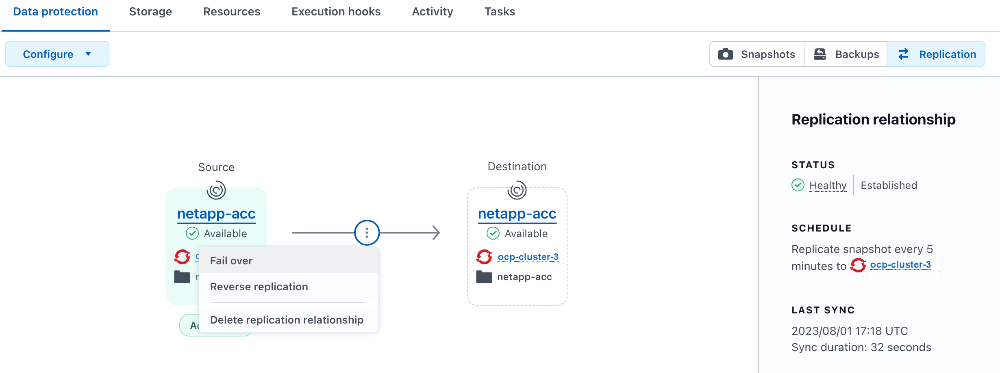

Release notes
Release notes
Protect Astra Control Center using Astra Control Center
 Suggest changes
Suggest changes
To better ensure resiliency against fatal errors on the Kubernetes cluster where Astra Control Center is running, protect the Astra Control Center application itself. You can backup and restore Astra Control Center using a secondary Astra Control Center instance or use Astra replication if the underlying storage is using ONTAP.
In these scenarios, a second instance of Astra Control Center is deployed and configured in a different fault domain and runs on a different second Kubernetes cluster than the primary Astra Control Center instance. The second Astra Control instance is used to back up and potentially restore the primary Astra Control Center instance. A restored or replicated Astra Control Center instance will continue to provide application data management for the application cluster applications and restore accessibility to backups and snapshots of those applications.
Ensure that you have the following before setting up protection scenarios for Astra Control Center:
-
A Kubernetes cluster running the primary Astra Control Center instance: This cluster hosts the primary Astra Control Center instance which manages application clusters.
-
A second Kubernetes cluster of the same Kubernetes distribution type as the primary that is running the secondary Astra Control Center instance: This cluster hosts the Astra Control Center instance that manages the primary Astra Control Center instance.
-
A third Kubernetes cluster of the same Kubernetes distribution type as the primary: This cluster will host the restored or replicated instance of Astra Control Center. It must have the same Astra Control Center namespace available that is currently deployed on the primary. For example, if Astra Control Center is deployed in namespace
netapp-accon the source cluster, the namespacenetapp-accmust be available and not used by any applications on the destination Kubernetes cluster. -
S3-compatible buckets: Each Astra Control Center instance has an accessible S3-compatible object storage bucket.
-
A configured load balancer: The load balancer provides an IP address for Astra and must have network connectivity to the application clusters and both S3 buckets.
-
Clusters meet Astra Control Center requirements: Each cluster used in Astra Control Center protection meets general Astra Control Center requirements.
These procedures describe the necessary steps to restore Astra Control Center to a new cluster using either backup and restore or replication. Steps are based on the example configuration depicted here:

In this example configuration, the following is shown:
-
A Kubernetes cluster running the primary Astra Control Center instance:
-
OpenShift cluster:
ocp-cluster-1 -
Astra Control Center primary instance:
ocp-cluster-1.company.com -
This cluster manages the application clusters.
-
-
The second Kubernetes cluster of the same Kubernetes distribution type as the primary that is running the secondary Astra Control Center instance:
-
OpenShift cluster:
ocp-cluster-2 -
Astra Control Center secondary instance:
ocp-cluster-2.company.com -
This cluster will be used to back up the primary Astra Control Center instance or configure replication to a different cluster (in this example, the
ocp-cluster-3cluster).
-
-
A third Kubernetes cluster of the same Kubernetes distribution type as the primary that will be used for restore operations:
-
OpenShift cluster:
ocp-cluster-3 -
Astra Control Center third instance:
ocp-cluster-3.company.com -
This cluster will be used for Astra Control Center restore or replication failover.
-

|
Ideally, the application cluster should be situated outside of the three Astra Control Center clusters as depicted by the kubernetes and rancher clusters in the image above. |
Not depicted in the diagram:
-
All the clusters have ONTAP backends with Astra Trident or Astra Control Provisioner installed.
-
In this configuration, the OpenShift clusters are using MetalLB as the load balancer.
-
The snapshot controller and VolumeSnapshotClass are also installed on all the clusters as outlined in the prerequisites.
Step 1 option: Backup and restore Astra Control Center
This procedure describes the necessary steps to restore Astra Control Center to a new cluster using backup and restore.
In this example, Astra Control Center is always installed under the netapp-acc namespace and the operator is installed under the netapp-acc-operator namespace.
|
|
Although not described, Astra Control Center operator can also be deployed in the same namespace as the Astra CR. |
-
You have installed the primary Astra Control Center on a cluster.
-
You have installed the secondary Astra Control Center on a different cluster.
-
Manage the primary Astra Control Center application and destination cluster from the secondary Astra Control Center instance (running on
ocp-cluster-2cluster):-
Log into the secondary Astra Control Center instance.
-
Add the primary Astra Control Center cluster (
ocp-cluster-1). -
Add the destination third cluster (
ocp-cluster-3) that will be used for the restore.
-
-
Manage Astra Control Center and the Astra Control Center operator on the secondary Astra Control Center:
-
From the Applications page, select Define.
-
In the Define application window, enter the new application name (
netapp-acc). -
Choose the cluster that is running the primary Astra Control Center (
ocp-cluster-1) from the Cluster drop-down list. -
Choose the
netapp-accnamespace for Astra Control Center from the Namespace drop-down list. -
On the Cluster Resources page, check Include additional cluster-scoped resources.
-
Select Add include rule.
-
Select these entries, and select Add:
-
Label selector: <label name>
-
Group: apiextensions.k8s.io
-
Version: v1
-
Kind: CustomResourceDefinition
-
-
Confirm the application information.
-
Select Define.
After you select Define, repeat the Define Application process for the operator (
netapp-acc-operator) and select thenetapp-acc-operatornamespace in the Define Application wizard.
-
-
Back up Astra Control Center and the operator:
-
After you have backed up Astra Control Center and the operator, simulate a disaster recovery (DR) scenario by uninstalling Astra Control Center from the primary cluster.
You'll restore Astra Control Center to a new cluster (the third Kubernetes cluster described in this procedure) and use the same DNS as the primary cluster for the newly installed Astra Control Center. -
Using the secondary Astra Control Center, restore the primary instance of the Astra Control Center application from its backup:
-
Select Applications and then select the name of the Astra Control Center application.
-
From the Options menu in the Actions column, select Restore.
-
Choose the Restore to new namespaces as the restore type.
-
Enter the restore name (
netapp-acc). -
Choose the destination third cluster (
ocp-cluster-3). -
Update the destination namespace so that it is the same namespace as the original.
-
On the Restore Source page, select the application backup that will be used as the restore source.
-
Select Restore using original storage classes.
-
Select Restore all resources.
-
Review restore information, and then select Restore to start the restore process that restores Astra Control Center to the destination cluster (
ocp-cluster-3). The restore is complete when the application entersavailablestate.
-
-
Configure Astra Control Center on the destination cluster:
-
Open a terminal and connect using kubeconfig to the destination cluster (
ocp-cluster-3) that contains the restored Astra Control Center. -
Confirm that the
ADDRESScolumn in the Astra Control Center configuration references the primary system's DNS name:kubectl get acc -n netapp-acc
Response:
NAME UUID VERSION ADDRESS READY astra 89f4fd47-0cf0-4c7a-a44e-43353dc96ba8 24.02.0-69 ocp-cluster-1.company.com True
-
If the
ADDRESSfield in the above response does not have the FQDN of the primary Astra Control Center instance, update the configuration to reference the Astra Control Center DNS:kubectl edit acc -n netapp-acc
-
Change the
astraAddressunderspec:to the FQDN (ocp-cluster-1.company.comin this example) of the primary Astra Control Center instance. -
Save the configuration.
-
Confirm that the address has been updated:
kubectl get acc -n netapp-acc
-
-
Go to the Restore the Astra Control Center Operator section of this document to complete the restore process.
-
Step 1 option: Protect Astra Control Center using Replication
This procedure describes the necessary steps to configure Astra Control Center replication to protect the primary Astra Control Center instance.
In this example, Astra Control Center is always installed under the netapp-acc namespace and the operator is installed under the netapp-acc-operator namespace.
-
You have installed the primary Astra Control Center on a cluster.
-
You have installed the secondary Astra Control Center on a different cluster.
-
Manage the primary Astra Control Center application and destination cluster from the secondary Astra Control Center instance:
-
Log into the secondary Astra Control Center instance.
-
Add the primary Astra Control Center cluster (
ocp-cluster-1). -
Add the destination third cluster (
ocp-cluster-3) that will be used for the replication.
-
-
Manage Astra Control Center and the Astra Control Center operator on the secondary Astra Control Center:
-
Select Clusters and select the cluster that contains the primary Astra Control Center (
ocp-cluster-1). -
Select the Namespaces tab.
-
Select
netapp-accandnetapp-acc-operatornamespaces. -
Select the Actions menu and select Define as applications.
-
Select View in applications to see the defined applications.
-
-
Configure Backends for Replication:
Replication requires that the primary Astra Control Center cluster and the destination cluster ( ocp-cluster-3) use different peered ONTAP storage backends.
After each backend is peered and added to Astra Control, the backend appears in the Discovered tab of the Backends page.-
Add a peered backend to Astra Control Center on the primary cluster.
-
Add a peered backend to Astra Control Center on the destination cluster.
-
-
Configure replication:
-
On the Applications screen, select the
netapp-accapplication. -
Select Configure replication policy.
-
Select
ocp-cluster-3as the destination cluster. -
Select the storage class.
-
Enter
netapp-accas the destination namespace. -
Change the replication frequency if desired.
-
Select Next.
-
Confirm the configuration is correct, and select Save.
The replication relationship transitions from
EstablishingtoEstablished. When active, this replication will occur every five minutes until the replication configuration is deleted.
-
-
Failover the replication to the other cluster if the primary system is corrupted or no longer accessible:
Make sure the destination cluster does not have Astra Control Center installed to ensure a successful failover. -
Select the vertical ellipses icon and select Fail over.

-
Confirm the details and select Fail over to begin the failover process.
The replication relationship status changes to
Failing overand thenFailed overwhen complete.
-
-
Complete the failover configuration:
-
Open a terminal and connect using the third cluster's kubeconfig (
ocp-cluster-3). This cluster now has Astra Control Center installed. -
Determine the Astra Control Center FQDN on the third cluster (
ocp-cluster-3). -
Update the configuration to reference the Astra Control Center DNS:
kubectl edit acc -n netapp-acc
-
Change the
astraAddressunderspec:with the FQDN (ocp-cluster-3.company.com) of the destination third cluster. -
Save the configuration.
-
Confirm that the address has been updated:
kubectl get acc -n netapp-acc
-
-
Confirm that all required traefik CRDs are present:
kubectl get crds | grep traefik
Required traefik CRDS:
ingressroutes.traefik.containo.us ingressroutes.traefik.io ingressroutetcps.traefik.containo.us ingressroutetcps.traefik.io ingressrouteudps.traefik.containo.us ingressrouteudps.traefik.io middlewares.traefik.containo.us middlewares.traefik.io middlewaretcps.traefik.containo.us middlewaretcps.traefik.io serverstransports.traefik.containo.us serverstransports.traefik.io tlsoptions.traefik.containo.us tlsoptions.traefik.io tIsstores.traefik.containo.us tIsstores.traefik.io traefikservices.traefik.containo.us traefikservices.traefik.io
-
If some of the above CRDs are missing:
-
Go to traefik documentation.
-
Copy the "Definitions" area into a file.
-
Apply changes:
kubectl apply -f <file name>
-
Restart traefik:
kubectl get pods -n netapp-acc | grep -e "traefik" | awk '{print $1}' | xargs kubectl delete pod -n netapp-acc
-
-
Go to the Restore the Astra Control Center Operator section of this document to complete the restore process.
-
Step 2: Restore the Astra Control Center Operator
Using the secondary Astra Control Center, restore the primary Astra Control Center operator from backup. The destination namespace must be the same as the source namespace. In the case where Astra Control Center was deleted from the primary source cluster, backups will still exist to perform the same restore steps.
-
Select Applications and then select the name of the operator app (
netapp-acc-operator). -
From the Options menu in the Actions column, select Restore
-
Choose the Restore to new namespaces as the restore type.
-
Choose the destination third cluster (
ocp-cluster-3). -
Change the namespace to be the same as the namespace associated with the primary source cluster (
netapp-acc-operator). -
Select the backup that was taken earlier as the restore source.
-
Select Restore using original storage classes.
-
Select Restore all resources.
-
Review the details then click Restore to start the restore process.
The Applications page shows the Astra Control Center operator being restored to the destination third cluster (
ocp-cluster-3). When the process is complete, the state shows asAvailable. Within ten minutes, the DNS address should resolve on the page.
Astra Control Center, its registered clusters, and managed applications with their snapshots and backups are now available on the destination third cluster (ocp-cluster-3). Any protection policies you had on the original are also there on the new instance. You can continue to take scheduled or on-demand backups and snapshots.
Troubleshooting
Determine system health and if protection processes were successful.
-
Pods are not running: Confirm that all pods are up and running:
kubectl get pods -n netapp-acc
If some pods are in the
CrashLookBackOffstate, restart them and they should transition toRunningstate. -
Confirm system status: Confirm that the Astra Control Center system is in
readystate:kubectl get acc -n netapp-acc
Response:
NAME UUID VERSION ADDRESS READY astra 89f4fd47-0cf0-4c7a-a44e-43353dc96ba8 24.02.0-69 ocp-cluster-1.company.com True
-
Confirm deployment status: Show Astra Control Center deployment information to confirm that
Deployment StateisDeployed.kubectl describe acc astra -n netapp-acc
-
Restored Astra Control Center UI returns a 404 error: If this happens when you have selected
AccTraefikas an ingress option, check the traefik CRDs to ensure they're all installed.